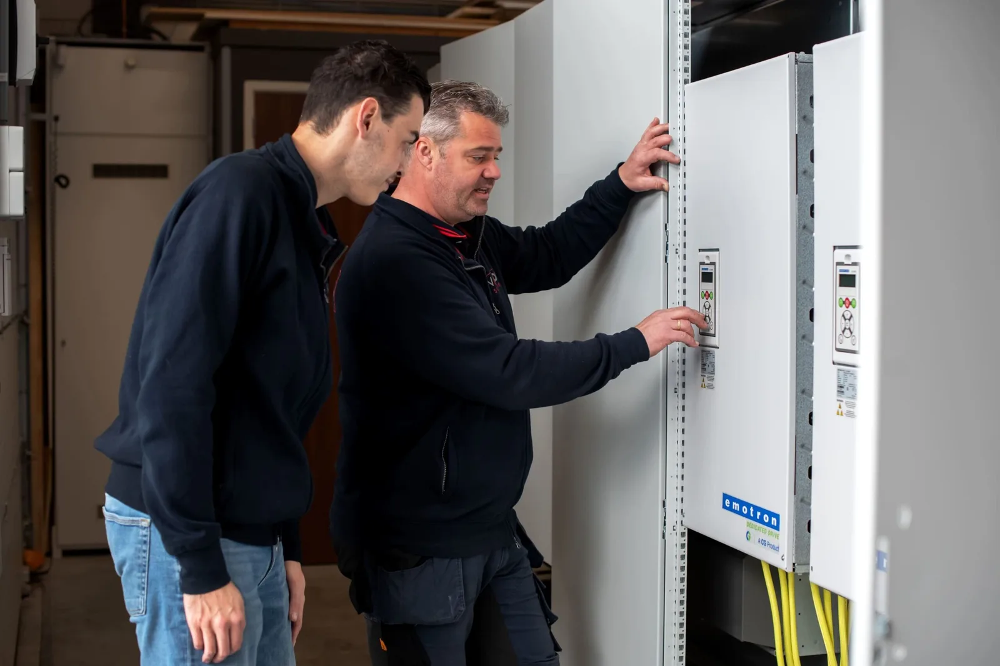

Het kloppend hart van elke industriële installatie. Wij ontwerpen, bouwen en testen besturingspanelen en -kasten volledig in eigen huis, exact afgestemd op uw proces.
Een besturingspaneel bevat de elektrische componenten die uw machines en processen aansturen: PLC’s, HMI’s, frequentieregelaars, zekeringen, relais en klemmenstroken. Samen met de kast eromheen vormt het de schakel tussen uw installatie en uw proces.
Een goed ontworpen paneel betekent betrouwbare aansturing, eenvoudige monitoring en minder storingen. Daarom nemen wij zowel ontwerp als bouw én test volledig in eigen hand: geen tussenschakels, geen verrassingen.

Van enkelstuks maatwerk tot seriebouw: elke kast verlaat onze werkplaats pas na een volledige functietest.
Vrijblijvend gesprek over uw proces en wensen.
Engineering, schema's en componentkeuze.
Assemblage en bedrading in eigen werkplaats.
Volledige functietest vóór uitlevering.
Installatie, inbedrijfstelling en onderhoud.
Het besturingspaneel is de inhoud: de plaat met PLC's, relais, klemmen en bedrading die uw installatie aanstuurt. De besturingskast is de behuizing eromheen die alles beschermt. Wij ontwerpen, bouwen en testen beide als één geheel.
Dat hangt af van de componenten, de complexiteit en het aantal. Na een gratis adviesgesprek ontvangt u binnen 5 werkdagen een offerte op maat, zonder verplichtingen.
Ja, elke kast krijgt een volledige functietest in onze werkplaats voordat hij de deur uit gaat. U ontvangt de kast werkend en gedocumenteerd.
Ja. We reviseren en breiden bestaande kasten uit, ook als het oorspronkelijke schema van een andere partij komt of onvolledig is.
Vrijblijvend adviesgesprek · Offerte binnen 5 werkdagen · Reactie binnen 24 uur